Convolution meets the classical detector:
where a CNN earns its keep
Session 22 · Fri Nov 20 · Book section 4.3
📡
Today’s question
Observatories have run one detector for fifty years.
What is inside a convolutional network, and when does it beat the classical detector?
Reading: 4.3 Convolutional neural networks
Four canonical networks: today, convolutional
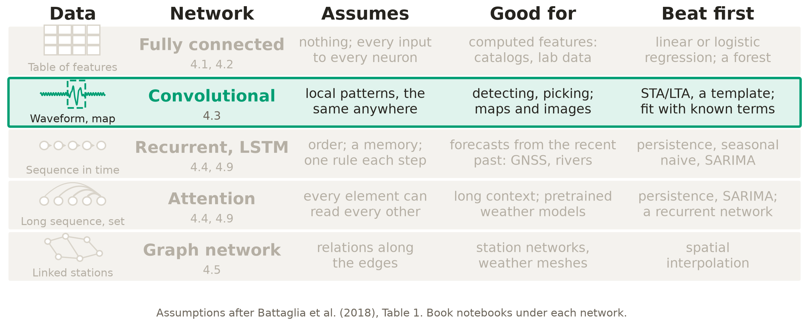
A waveform, a spectrogram or a map is a grid: neighbors are related, and the same pattern can appear anywhere. A convolutional layer assumes both, and pays for each pattern once.
This lecture in the literature
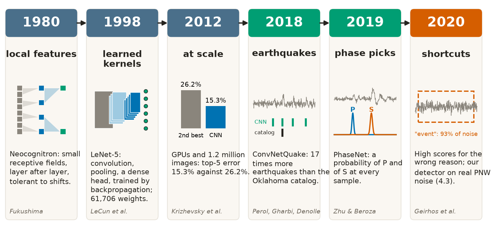
From local features to earthquake catalogs, and the shortcut we measure today.
Fukushima (1980) Biol. Cybern. 36, 193–202 · LeCun et al. (1998) Proc. IEEE 86, 2278–2324 · Krizhevsky, Sutskever & Hinton (2012) NeurIPS 25 · Perol, Gharbi & Denolle (2018) Sci. Adv. 4, e1700578 · Zhu & Beroza (2019) Geophys. J. Int. 216, 261–273 · Geirhos et al. (2020) Nat. Mach. Intell. 2, 665–673. Icons drawn; LeNet-5’s 61,706 weights as printed by notebook 4.3.
Wednesday’s neuron loses an arrival that moves by 0.1 s

The neuron of lecture 21 detects 99.5% of events at the trained arrival time, 47% when the arrival is 0.05 s later, and none from 0.08 s to 0.25 s. The template slid over every lag detects all of them.
Inside a CNN: a block finds, a head decides
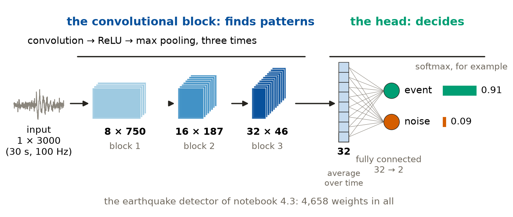
Three blocks of convolution, ReLU and pooling turn 3,000 samples into 32 numbers; a fully connected head turns them into one probability per class.
Conv1D by hand: multiply, add, slide
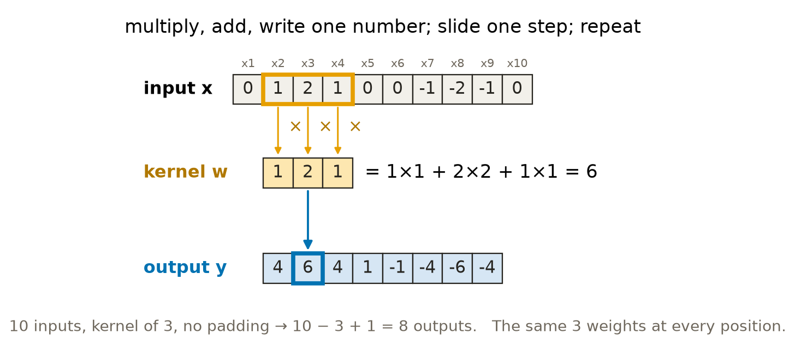
One output = the sum of kernel × the samples under it. Slide one step and repeat: 10 inputs and a kernel of 3 give 8 outputs, with the same 3 weights everywhere.
Convolution: multiply, add, slide
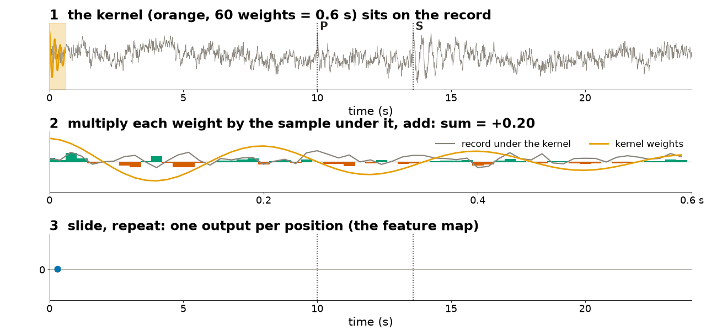
At every position: multiply each weight by the sample under it, add, write one number. The output is largest (6.7) where the record looks like the kernel, at the P wave; before P it scatters with a spread of 1.0.
Kernel size against the length of the pattern
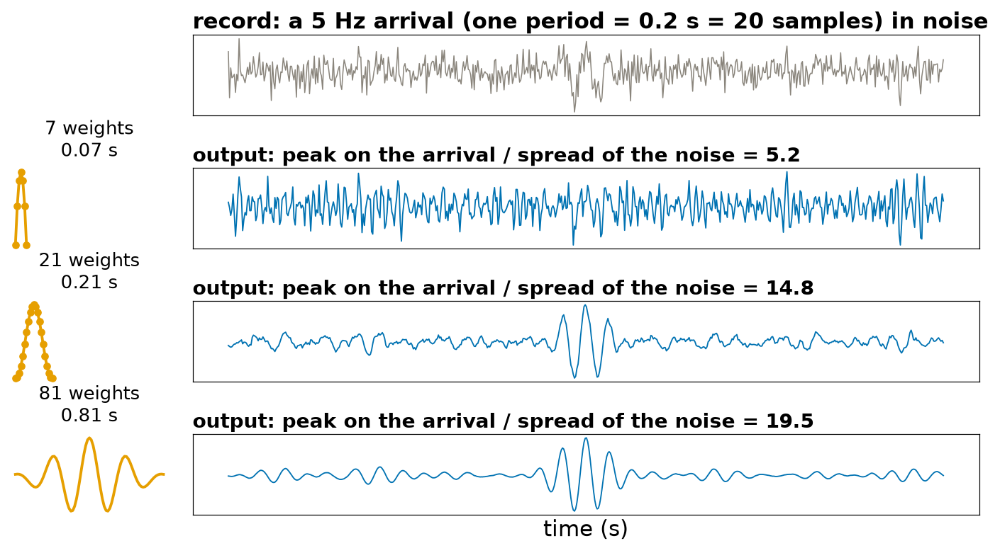
Shorter than one period (7 weights), a kernel responds to any wiggle; one period or more (21, 81), it matches the arrival: peak over noise 5.2, 14.8, 19.5.
One layer, several kernels: each sees something else
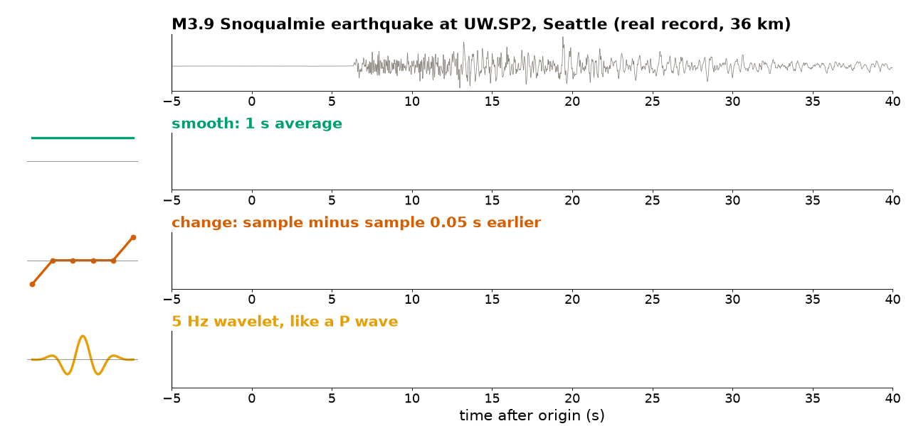
Three kernels, one real record: an average keeps the slow motion, a difference keeps the sharp changes, a 5 Hz wavelet keeps the P-wave band. The first layer of the 4.3 detector has 8 kernels, learned, not chosen.
Conv2D by hand: a 3 × 3 window
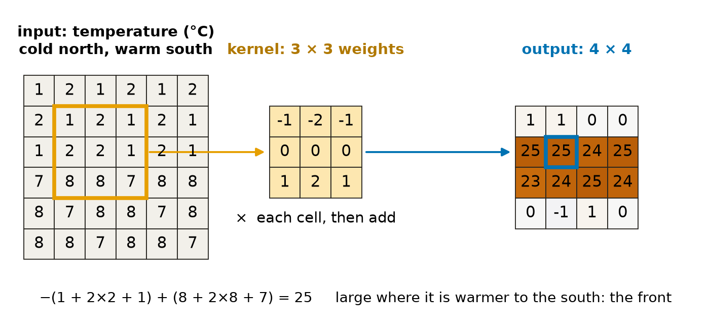
Nine values × nine weights, added: one output. South row +, north row −: the output is 23 to 25 on the front, −1 to 1 elsewhere.
In 2-D: the same sum over a 3×3 window
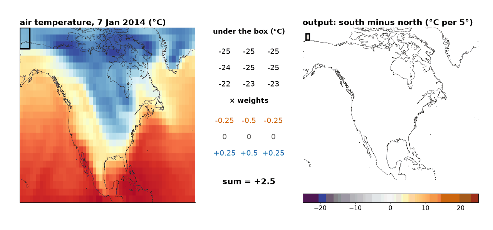
North row −¼ −½ −¼, south row +¼ +½ +¼: the output is how much warmer it is 5° to the south. It traces the edge of the Arctic air mass of 7 January 2014 across North America.
Channel or kernel?
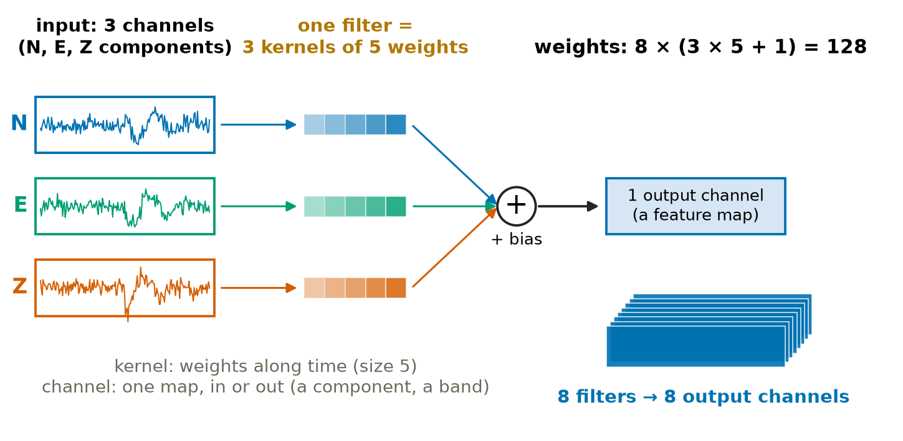
A filter has one kernel per input channel; their outputs add into one output channel. 8 filters on N, E, Z, kernels of 5: 8 × (3 × 5 + 1) = 128 weights.
How many weights to fit?
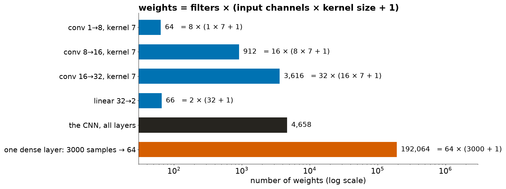
The whole 4.3 detector has 4,658 weights. One dense layer from the 3,000 samples to 64 neurons would need 192,064: sharing the kernel along time is what keeps a CNN small.
Activation: ReLU keeps the matches
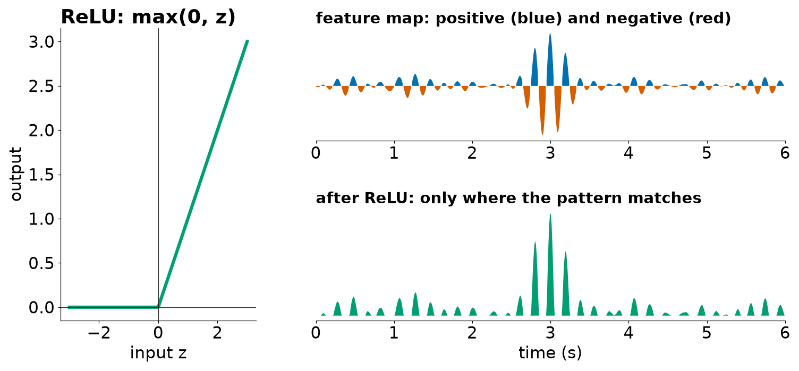
After each convolution, ReLU sets negative values to zero. Without it, three stacked convolutions are still one linear filter.
Pooling: shorter maps, no weights
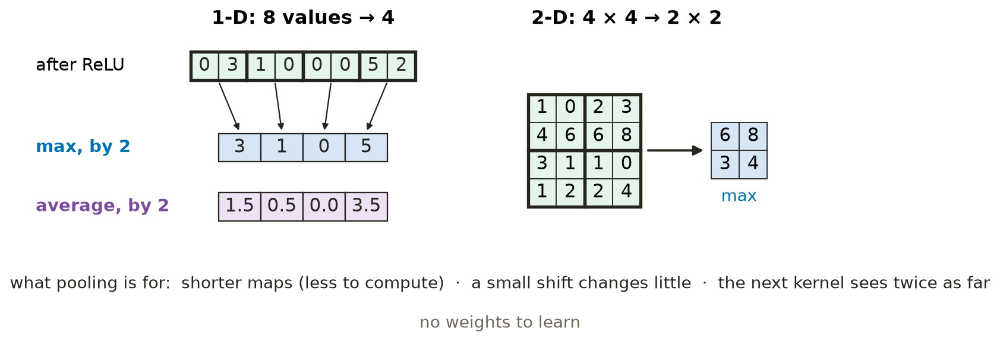
Max pooling keeps the largest value of each group, average pooling the mean. Each pooling by 2 halves the map, so the next kernel sees twice as far.
The same weights at every position
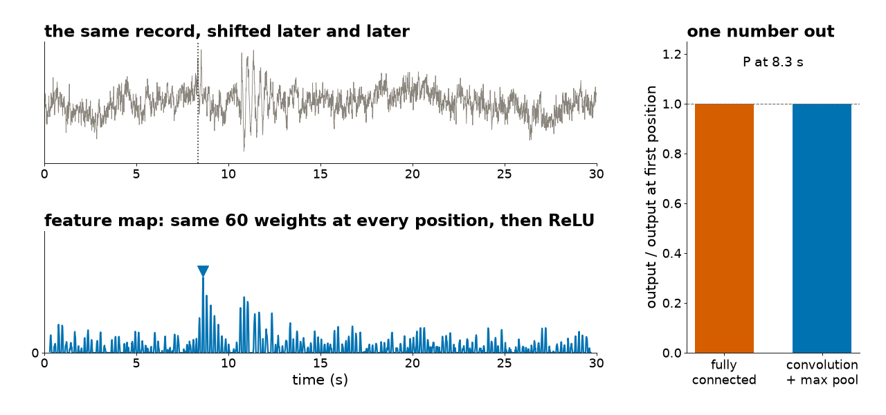
Shift the record and the feature map shifts with it; its maximum stays at 1.00. The fully connected neuron, one weight per position, falls to −0.62 after a shift of 0.5 s.
Stacking layers widens the view
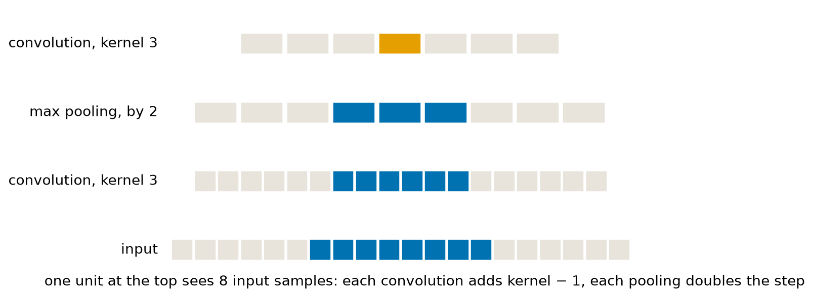
Convolution (kernel 3), pooling (by 2), convolution (kernel 3): one unit at the top depends on 8 input samples. That span is its receptive field.
How far one unit sees: 1.9 s in this detector
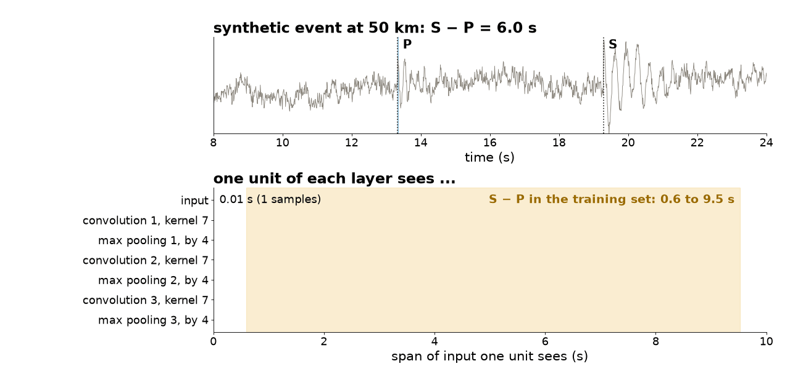
Each block widens the view: 0.07, 0.34, 1.42 s after the three convolutions, 1.90 s after the last pooling. S − P exceeds 1.9 s beyond about 16 km, so no unit sees the P and S waves together.
Wide and shallow, or long and skinny?
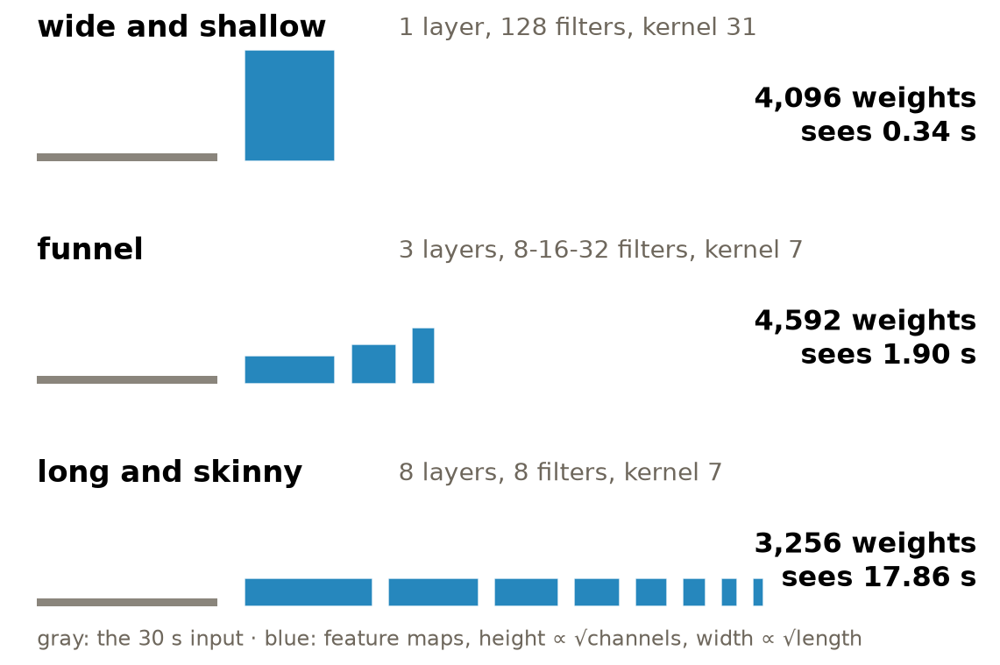
With about 4,000 weights each, one wide layer sees 0.34 s, the funnel 1.90 s, eight skinny layers 17.86 s. Depth buys reach and combinations of patterns; width buys variety at one scale.
Flatten, or average over time?
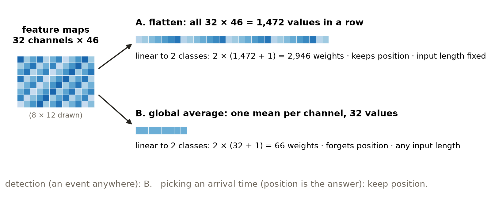
Flatten keeps every value and its position: 2,946 weights, one input length. Global average keeps one mean per channel: 66 weights, any length.
Classification or regression: the head decides
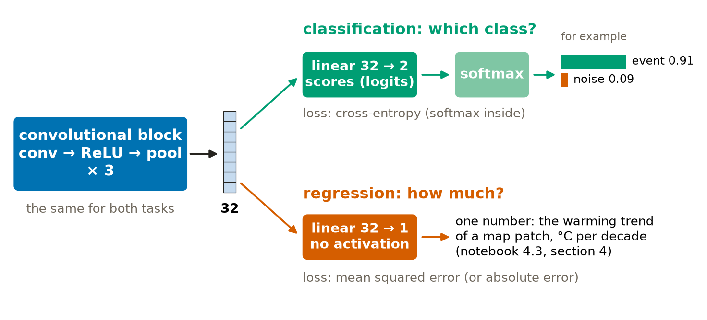
Classification: one score per class, softmax, cross-entropy. Regression: one number, no activation, mean squared error. The block before it is the same.
2-D case: reading a warming trend from a gridded field
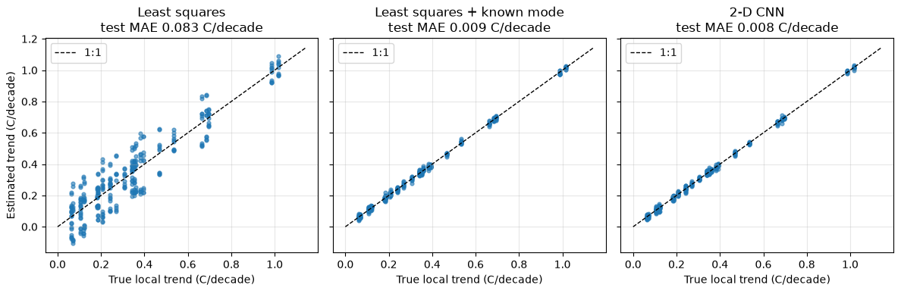
The CNN beats naive least squares 10× (0.008 vs 0.083 °C/decade MAE) — but give the classical fit the one confounding mode it was missing and it matches the CNN at 0.009. A 10× win over an underspecified baseline. Synthetic (mlgeo_synth).
Leaderboard 1: a warming trend from maps (4.3)
| Model | Weights | Test error (°C/decade) |
|---|---|---|
| 2-D CNN | 17,953 | 0.008 |
| least squares, with the known 5-year mode | — | 0.009 |
| least squares, straight line | — | 0.083 |
A 10× win over the straight line; a tie with the fit that knows the generator’s terms. Always ask what the baseline was denied.
1-D case: an earthquake detector in 4,658 weights
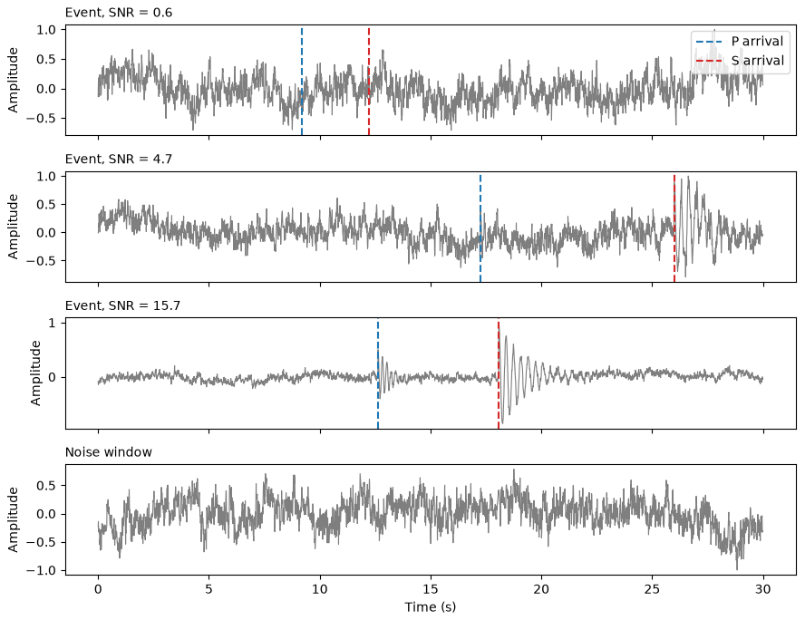
Event windows at low SNR are invisible by eye — exactly the regime where a detector must be measured, and where real catalogs cannot measure it. Synthetic (mlgeo_synth).
Reality check 1: same traces, classical opponent
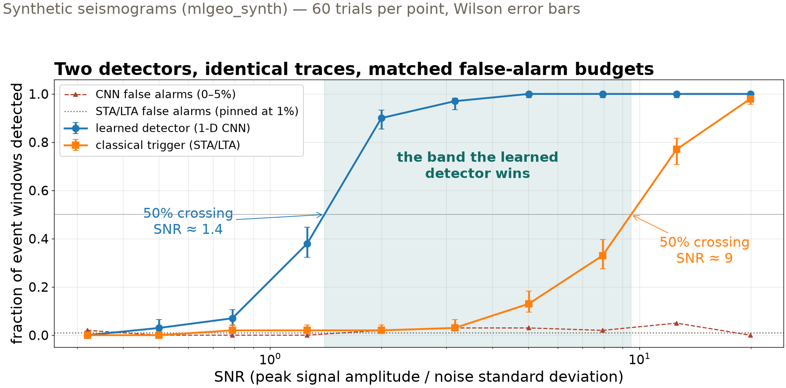
At ~1% false alarms the CNN crosses 50% at SNR ≈ 1.4, STA/LTA at ≈ 9. At SNR 2: 90% of events against 2%.
Leaderboard 2: the earthquake detector (4.3)
| Detector | Weights | 50% detected at SNR | Detected at SNR 2 |
|---|---|---|---|
| 1-D CNN | 4,658 | ≈ 1.4 | 90% |
| STA/LTA, threshold at 1% false alarms | 0 | ≈ 9 | 2% |
Lower is better: the CNN detects half of the events at an SNR six times lower. It earns its keep where the classical method cannot reach.
Reality check 2: real waveforms, no retraining
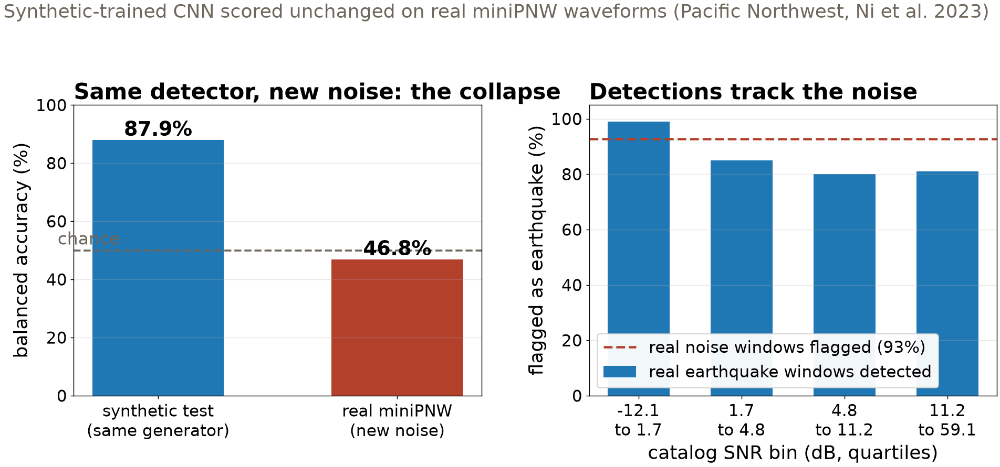
87.9% on synthetic test → 46.8% on real miniPNW, with 93% of real noise windows flagged. Measured 2026-11-20 (4.3 at commit 4b4775c).
Best practices: the convolutional network
| Step | Practice | Rubric |
|---|---|---|
| Design | kernel and receptive field match the phase period | C2.1 |
| Design | normalize each record; no amplitude shortcut | C2.2 |
| Design | pooling where position does not matter | C2.3 |
| Baseline | STA/LTA or the informed regression, same records | C2.4 |
| Evaluate | detection against SNR, matched false alarms | E4 |
| Evaluate | real records before any claim | E5 |
Start your team’s agent now: it works while you train
One laptop per team runs the agent; the rest of the team goes to the stations. First: git pull in your mlgeo-book folder, and open that folder in VS Code.
GitHub Copilot
- Open Chat: ⌃⌘I (Mac) or Ctrl+Alt+I
- Mode menu under the chat box: Agent
- Paste the prompt
- Allow the commands it asks to run
Claude Code
- In the VS Code terminal:
claude - Paste the prompt
- Allow the commands it asks to run
UW Purple only
- purple.uw.edu, NetID
- Attach
seismic.pyfrombook/mlgeo_synth/(as.txtif refused) - Run B: also attach the rubric file named in the prompt
- Paste the prompt and the Purple line
Odd-numbered teams run A, even-numbered teams run B. The two prompts differ by one paragraph.
The prompt: copy it exactly
Replace <team> with your team number and <A or B> with your run.
Build a 1-D convolutional network that detects earthquakes in 30 s vertical-component seismograms sampled at 100 Hz. Train it on synthetic records from mlgeo_synth.seismogram_dataset (source: book/mlgeo_synth/seismic.py). The detector will run on real stations, where the background noise differs from the generator's (the ocean microseism makes it redder, for example). Write one script, run it, and write report.md with your results and your verdict: is this detector ready to run on a real station?
Rules: run all code with `pixi run python`, on the CPU, with less than 10 minutes of training in total. Do not download anything. Write files only in book/Chapter4-DeepLearning/s22_agent_runs/team<team>_<A or B>/. Do not edit, commit, push or stash any other file.Run B only, add:
Follow every item of book/Chapter4-DeepLearning/mlgeo_4.7_dl_rubric.md. End report.md with a table of item ID, pass or fail, and evidence; then list the items you could not check, and why.Purple only, add: You cannot run code. Write the script and the report you expect it to produce, and mark every number as not computed.
When it stops: save, do not judge yet
- Save the conversation as
transcript.mdin your run folder- Claude Code:
/export - Copilot Chat: right-click in the chat, Copy All, paste
- Purple: copy the conversation, or print the page to PDF
- Claude Code:
git status: no book file should be listed. If one is,git checkout -- <file>and note it- On the board: team, A or B, tool and model, minutes to finish, finished or not
Do not read report.md yet. At minute 68 we score every run against the rubric the class writes today.
Now measure it yourself — open 4.3
mlgeo_4.3_CNN.ipynb: sections 1–2, with the two Your-turn cells (a kernel by hand, the weights of a layer)- Run the detection-floor sweep; estimate both 50% crossings from the printed table
- Retrain with only 2 epochs, rerun the sweep: whose floor moves — the CNN’s or STA/LTA’s, and why?
- Real seismograms: the same detector on miniPNW is Homework_DL
PyTorch names live here: nn.Conv1d/nn.Conv2d, nn.MaxPool1d, nn.AdaptiveAvgPool1d, torchinfo.summary · HW-CML due today · Mon: sequence models (4.4), HW-DL assigned
Four canonical networks: where convolutional fits
Convolutional: for patterns that can sit anywhere on a grid. It beat STA/LTA by a factor of six in SNR, and tied the fit that knew the physics.
ESS 469/569 · Machine Learning in the Geosciences · Autumn 2026